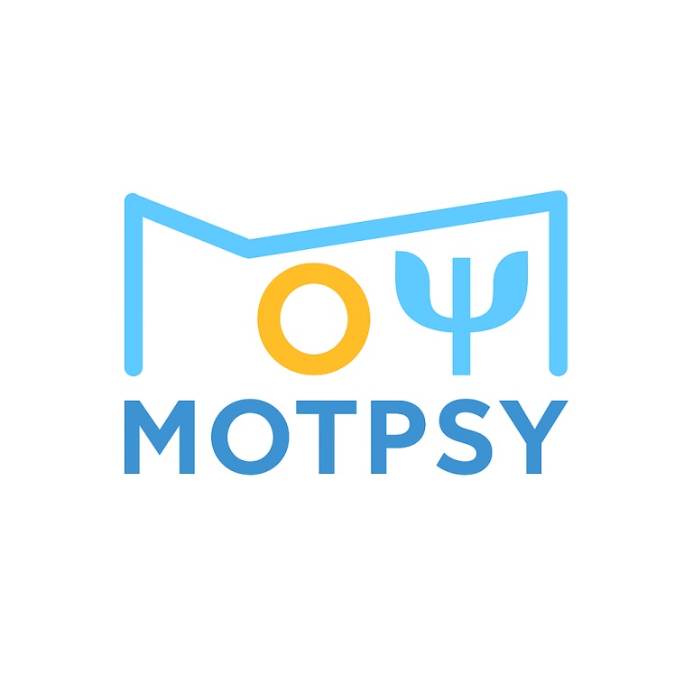
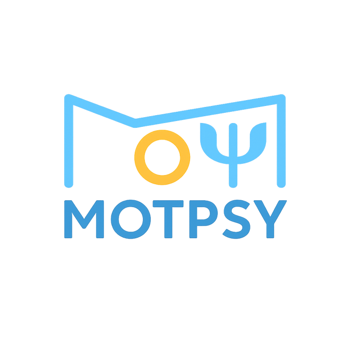

Le jeu en VO Psy*
Chaque jour, un nouveau mot du monde psy* à deviner en 6 essais.
Vous avez six essais pour deviner le mot du jour. Vous ne pouvez proposer que des mots commençant par la même lettre que le mot recherché (si elle est affichée), et qui se trouvent dans le dictionnaire… qui comprend bien sûr aussi des mots psys.
🟥 Lettre bien placée — 🟨 Lettre présente mais mal placée — 🟦 Lettre absente
Un seul mot par jour, identique pour tout le monde. Évitez les spoils, utilisez le bouton Copier pour partager votre résultat !
MotPsy, c'est un jeu pour toute la communauté psy*.
Psychanalyse, psychologie clinique, psychiatrie, thérapies humanistes, systémique, bioénergie, psychodrame… tous les courants, toutes les écoles sont les bienvenus.
Vous voulez proposer un mot ?
Envoyez un mail à motpsy@motpsy.fr avec :
— le mot (ou le nom d'un psy à faire deviner)
— une courte définition ou une anecdote
Je vous préviendrai du jour de mise en ligne 🙂
Et si vous êtes Psy* (* = chanalyste / chologue / chiatre / cothérapeute / chopraticien·ne / étudiant·e psy),
n'hésitez pas à préciser où vous exercez et votre courant ou société d'appartenance.
MotPsy est une idée de @didiercllo.bsky.social (SFPI).
Inspiré de Motchus de
@medericgc.bsky.social et
@armavi.bsky.social,
lui-même inspiré de SUTOM de @Jonamaths — basé sur Wordle et le regretté Motus.
Lexique standard : Grammalecte.